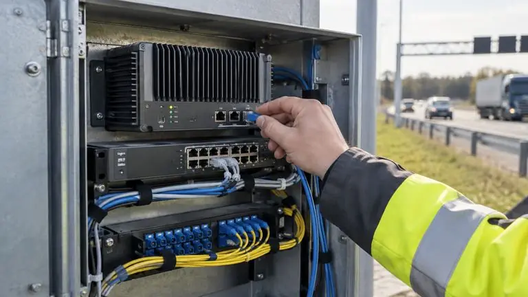
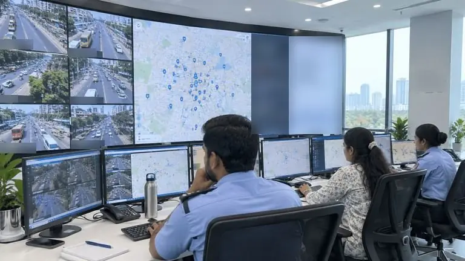

From camera to action, in real time.
AI does the watching. Your operator makes the call.
Capture and detect on site. Act in one control room.
-
Capture
Cameras, radar and call boxes send what they see to your own servers.
-
Detect
AI on site reads plates, measures speed and flags incidents, even if the link drops.

Link up · reads sent to the control room as they happen. -
Act
The event reaches Central Plexus (ATMS / ICCC) with its clip; your operator dispatches patrol, updates signs or sends it for e-challan.
A new scenario is cheap. A new camera is the real cost.
Each camera is decoded once and every scenario on it shares the same frames, so a new scenario costs far less than a new camera.
2 cameras · 2 scenarios · one decode per camera
Many sites, one control room.
Each site keeps working on its own; one control room sees every alert. Pick a site.
